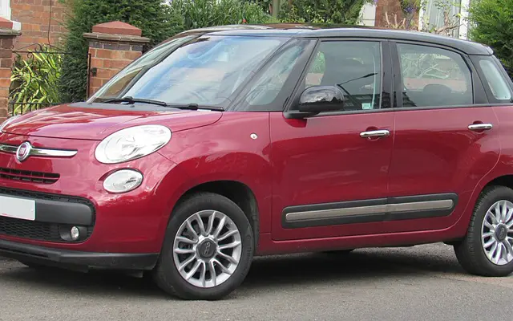

Par Motor › Precios por modelo › Fiat 500L
Precio de segunda mano · noviembre de 2026¿Cuánto vale un Fiat 500L de segunda mano?

Precio justo estimado de un Fiat 500L usado en España, año por año, con los kilómetros normales para su edad y en buen estado: de 5.600 € a 11.400 €. Para tasar el tuyo con sus kilómetros reales y su estado, usa el tasador gratis.
Precios del Fiat 500L por año
500L (2012–2022)
Precio de nuevo: 1.4 95 CV, 16.000 € · 1.3 Multijet 85 CV, 17.500 € · 0.9 TwinAir 105 CV, 17.000 €
| Año | Km normales | 1.4 95 CV · Gasolina | 1.3 Multijet 85 CV · Diésel | 0.9 TwinAir 105 CV · Gasolina |
|---|---|---|---|---|
| 2022 | 65.000 km | 10.800 € | 10.400 € | 11.400 € |
| 2021 | 80.000 km | 9.500 € | 9.500 € | 10.100 € |
| 2020 | 95.000 km | 8.300 € | 9.400 € | 8.800 € |
| 2019 | 100.000 km | 7.700 € | 9.200 € | 8.200 € |
| 2018 | 100.000 km | 7.500 € | 9.000 € | 8.000 € |
| 2017 | 100.000 km | 7.200 € | 8.800 € | 7.700 € |
| 2016 | 100.000 km | 7.000 € | 8.200 € | 7.400 € |
| 2015 | 100.000 km | 6.700 € | 7.500 € | 7.200 € |
| 2014 | 100.000 km | 6.500 € | 7.000 € | 6.900 € |
| 2013 | 100.000 km | 6.100 € | 6.400 € | 6.400 € |
| 2012 | 100.000 km | 5.600 € | 5.900 € | 6.000 € |
Kilómetros normales: 15.000 al año en gasolina, híbridos y eléctricos, y 20.000 en diésel, con un máximo de 100.000 km (por encima no tasamos: el precio depende demasiado del historial de cada coche). Cifras redondeadas a 100 €.
Preguntas frecuentes
¿Cuánto vale un Fiat 500L de segunda mano?
Según el año, la versión y los kilómetros, un Fiat 500L usado vale hoy de 5.600 € a 11.400 € en España. El más barato de nuestra tabla es un 1.4 de 2012 (5.600 €) y el más caro un 0.9 TwinAir de 2022 (11.400 €). Son precios justos estimados entre particulares y profesionales, con los kilómetros normales para su edad y en buen estado.
¿Cuánto valor pierde un Fiat 500L al año?
Con unos años encima, un Fiat 500L pierde alrededor de un 8 % de su valor cada año (calculado sobre el 1.4 de la generación 500L). Los primeros años la caída es mayor y a partir de los 70.000 km se acelera.
¿Qué motorizaciones tiene el Fiat 500L?
En nuestra base de datos hay versiones gasolina y diésel, en 1 generación: 500L.
¿Cómo sé si me piden demasiado por un Fiat 500L?
Abre el tasador de Par Motor, elige el Fiat 500L, el año y los kilómetros reales, y escribe lo que te piden. Te diremos si está por debajo del precio justo (chollo) o por encima (caro). Es gratis y no pide registro ni matrícula.
Otros Fiat
Compara su coste real
El precio de compra es solo una parte. Mira cuánto te costaría al mes con combustible, seguro, neumáticos, mantenimiento y lo que pierde de valor.
Abrir el comparador →